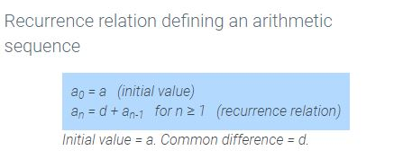
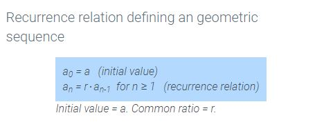

Recursion - A method that finds new values using previous values.
When discussing the
term of a sequence, it's common to write it as
.
So the sequence {1,2,3,4,5},
.
Recursive Relation - A rule that defines a term as a function of the previous terms in a sequence.
|  |  |
Some recursive relations can depend on more than 1 previous terms. A famous example is the Fibonacci Sequence.
Fibonacci Sequence
when
&